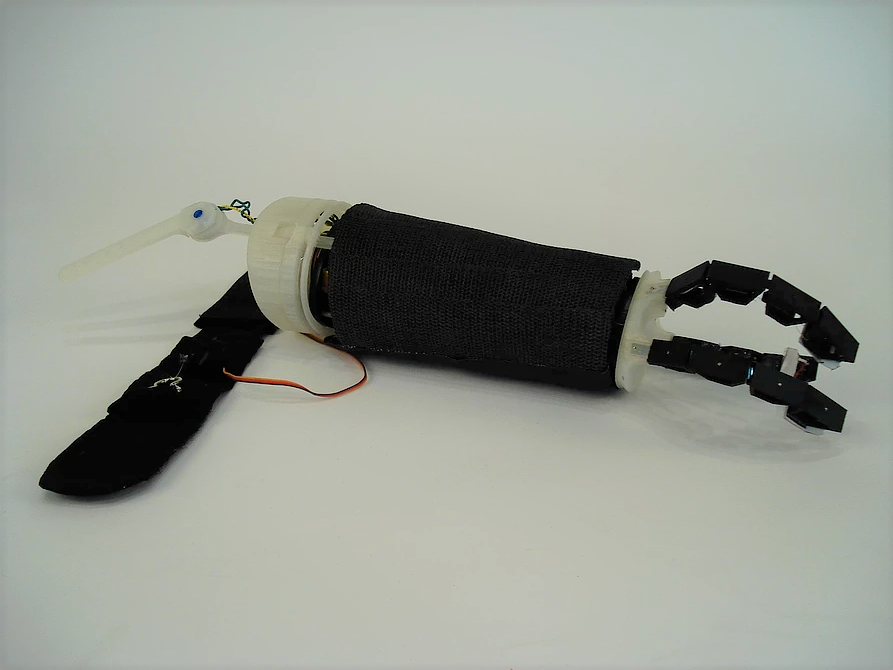
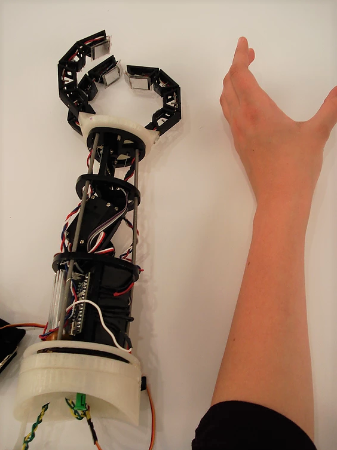

INTUITIVE CONTROL & FEEDBACK (ICF) UNDER-ELBOW PROSTHESIS
We believed that prosthetics ought to adapt to the human, not vice versa. Our arm predicts user motion based on wrist acceleration and forearm/upper-arm angle. It provides the user feedback with a cuff, cinching the user's upper arm with a strength proportional to the arm's grip.
With an eye towards size scalability, I spearheaded mechanical development of the arm, building eight prototypes during the project's eight-week timeline. The result was a $170, 0.9lb under-elbow prosthesis that married affordability with an intuitive usability.
Role: Mechanical designer
Audience: Under-elbow amputees
As of November 2018, engineering professor emeritus David Ullman is using this project as a scrum case study in his edition of The Mechanical Design Process textbook. ICF Prosthetic will sit next to examples from NASA and BMW.
Project website: subsystem and process details
Arm in action:
From left-right, top-bottom: Versions 1, 2, 3, 4, 6, and 8.


Photos of final version:
